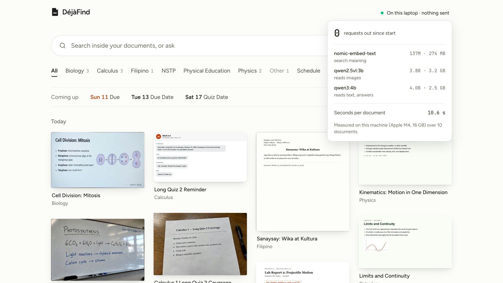

Model wait cut
Model wait cut
Model wait cut
Model wait cut
Model wait cut
The Library. Top right: On this laptop · nothing sent.
Screenshot the class schedule. Use it: six subjects.
A GC screenshot lands, read and filed under Biology.
Oct 17 lifts into Coming up.
Snap a whiteboard with the camera.
It lands, filed under Biology.
Ask: when’s my bio quiz?
The answer cites the screenshot it came from.
The Document view shows what it read.
Drop one more file. Still read on this laptop.
0 requests out. Three local models.
Quiz me on Biology: graded, with the source shown.
Find what you already saw.